Conceptos básicos
Explica con tus palabras qué es Git y para qué sirve. Después, responde también qué diferencia existe entre Git y GitHub.
Instalación de Git
Instala Git en tu equipo según tu sistema operativo. Comprueba la versión instalada desde la terminal.
git --version
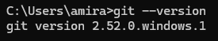
Configuración inicial
Configura Git con tu nombre y tu correo electrónico en modo global. Comprueba que se haya guardado.
git config --list
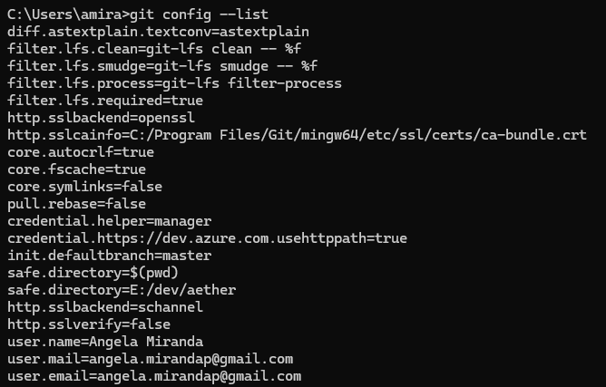
Crear tu primer repositorio
Crea una carpeta llamada first_repository, inicializa un repositorio Git y explica qué carpeta interna oculta se genera.
git initFunción técnica de la carpeta generada: Se crea una carpeta interna y oculta llamada
.git. Esta carpeta es el núcleo del control de versiones; contiene toda la base de datos de historial de cambios, metadatos, configuraciones de las ramas y los archivos del repositorio de forma transparente.
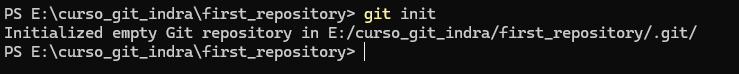
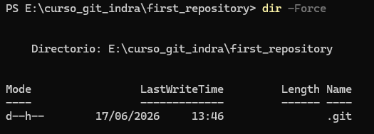
Primer archivo y estado del repositorio
Crea un archivo llamado README.md, comprueba el estado del repositorio y describe qué información te muestra Git.
git statusAnálisis de la información arrojada en la terminal:
- No commits yet: Todavía no se ha realizado ningún guardado permanente en el historial del repositorio.
- Untracked files (Archivos sin seguimiento): Indica con el archivo
README.mden color rojo que Git ha detectado el nuevo archivo pero no lo está rastreando. Advierte que es necesario usar el comandogit addpara incluirlo en los archivos listos para el próximo commit.
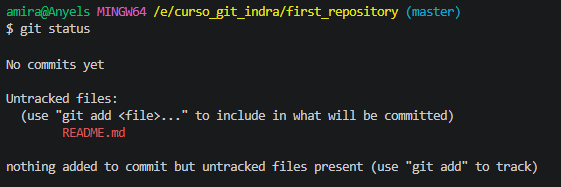
Añadir y guardar cambios
Añade el archivo al área de preparación, realiza un commit con un mensaje descriptivo y consulta el historial de commits.
git add README.md o git add .Al ejecutar de nuevo
git status indica Changes to be committed (new file: README.md). Esto confirma que está listo en la zona temporal para guardarse.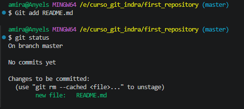
git commit -m "primer commit"[master ...]: Indica la rama activa donde se fijó el cambio.(root-commit): Indica el commit inicial de la historia del repositorio.638b3bc: Es el identificador Hash SHA-1 acortado para rastrearlo.1 file changed, 3 insertions(+): Se modificó 1 archivo y se agregaron 3 líneas.
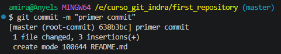
git logMuestra de forma detallada el Hash completo, autoría (nombre y correo configurados), fecha exacta y el mensaje descriptivo fijado.
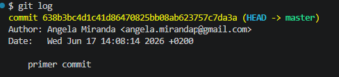
Clonar un repositorio
Investiga el uso de git clone y describe un ejemplo realista de uso.
Ejemplo de comando aplicado:
git clone https://github.com/freeCodeCamp/freeCodeCamp.git
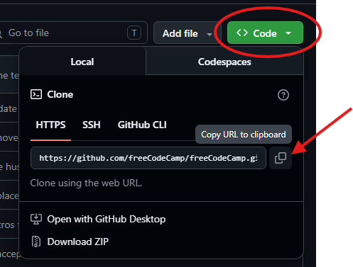
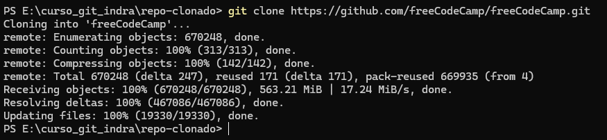
GUI de Git
Busca e indica una interfaz gráfica elegida para trabajar con Git y sus ventajas.
Ventajas frente a la terminal convencional:
- Evita alternar aplicaciones ya que el editor incluye el control directo.
- Permite realizar un *diff* visual (pantalla dividida y colores) de las líneas editadas antes de enviar un commit.
- Simplifica la gestión de conflictos de fusión mediante botones interactivos intuitivos.
GitHub
Crea un repositorio remoto llamado tema1-git y explica los pilares de usar GitHub.
¿Por qué utilizar plataformas en la nube?
- Respaldo: Salvaguarda el código ante cualquier rotura o fallo del equipo físico local.
- Colaboración: Centraliza el desarrollo para que múltiples ingenieros programen simultáneamente.
- Auditoría: Mantiene la traza pública y transparente de versiones.
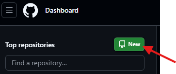
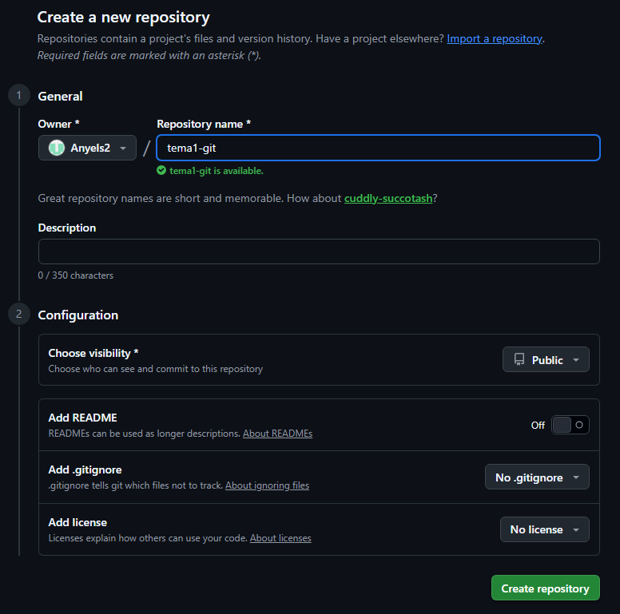
GitLab y comparación final
Compara brevemente GitLab con GitHub indicando similitudes y diferencias críticas.
Diferencia clave: GitLab se construyó desde su inicio con una visión "todo en uno" orientada fuertemente a DevOps, ofreciendo potentes sistemas integrados de automatizaciones (CI/CD) nativos. Por otro lado, GitHub destaca históricamente por su red de colaboración, comunidad social de desarrolladores e integraciones modulares a través de aplicaciones externas en su Marketplace.
Crear y listar ramas
Crea el repositorio tema2-ramas, inicializa el primer commit y genera las ramas feature/header y feature/footer. Lista las ramas.
git branch feature/headergit branch feature/footergit branch (para listarlas todas; la rama con un asterisco y color verde denota la rama que se encuentra activa).
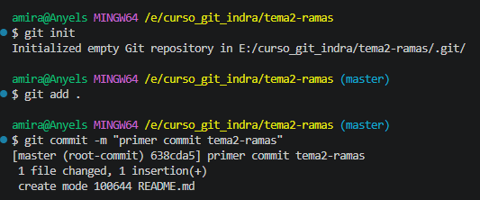
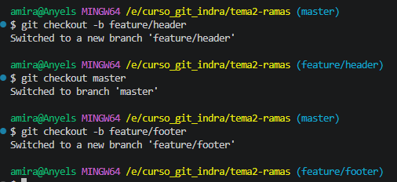
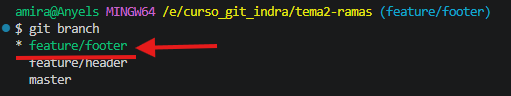
Cambiar entre ramas
Crea el archivo header.html en la rama header, guarda un commit y verifica su existencia al moverte a la rama footer.
header.html no existe ni se visualiza al cambiarse a la rama feature/footer.Explicación de Git: Cada rama representa una línea del tiempo o historial de trabajo aislado. Al realizar el commit del nuevo archivo estando posicionados únicamente dentro de
feature/header, los cambios quedan encapsulados y protegidos exclusivamente en ella, por lo que al cambiar de contexto, el directorio de trabajo se actualiza limpiando lo ajeno.
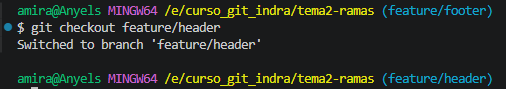
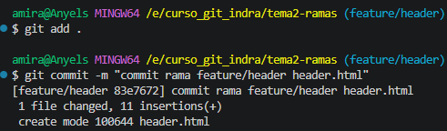
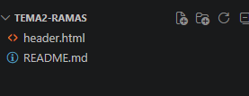
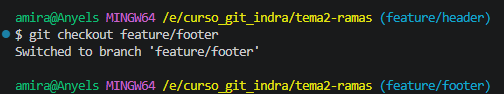
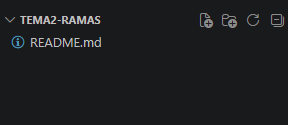
Tipos de ramas
Explica los flujos normalizados para las ramas de tipo feature, bugfix, release y hotfix.
| Tipo de Rama | ¿Para qué se utiliza? | Ejemplo de Nombre Válido |
|---|---|---|
feature |
Desarrollar nuevas funcionalidades o vistas aisladas del sistema. | feature/login-google |
bugfix |
Subsanar incidencias encontradas en ciclos de pruebas previos a producción. | bugfix/error-registro |
release |
Congelar y preparar la versión definitiva, puliendo detalles de entrega. | release/v1.2.0 |
hotfix |
Resolver fallos críticos de alta prioridad directamente expuestos en vivo. | hotfix/caida-pasarela-pago |
Reto final opcional
Conecta el repositorio local con tu cuenta remota de GitHub o GitLab para realizar una subida limpia.
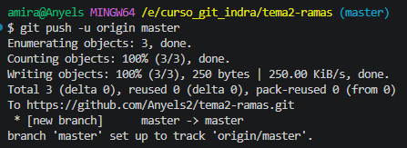
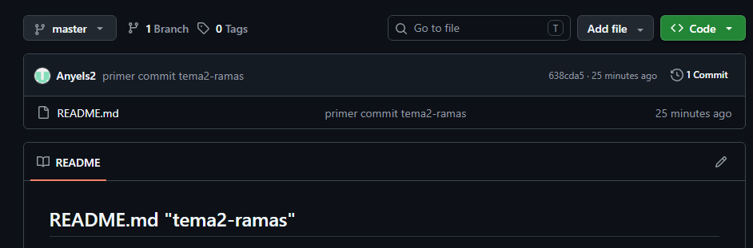